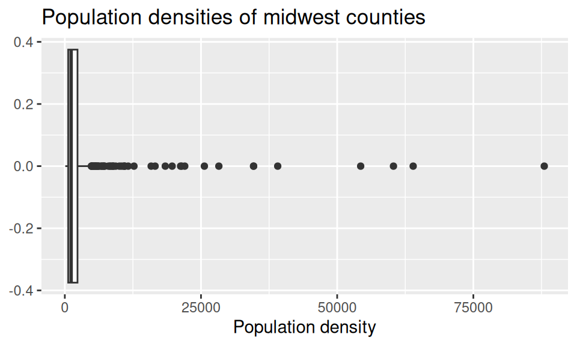
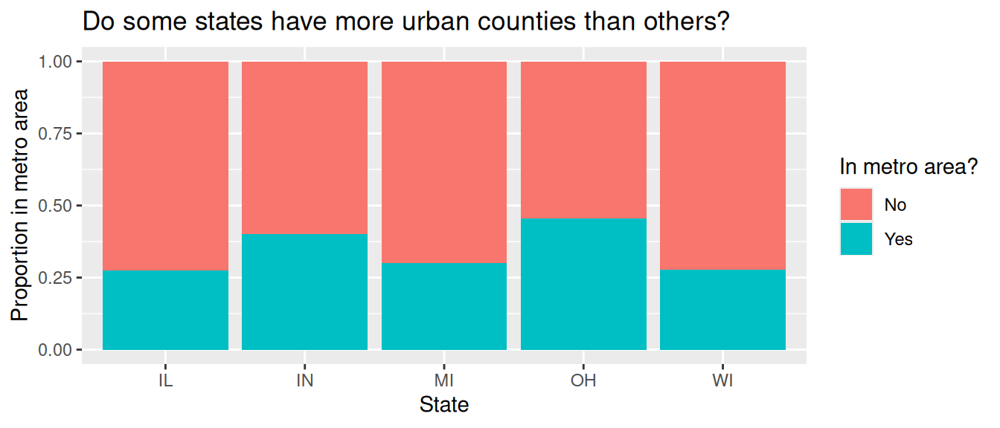

Lab 2
Data Transformation + Tidying
Introduction
In this lab, you’ll continue to hone your data science workflow and integrate data visualization, wrangling, and tidying.
Learning objectives
By the end of the lab, you will…
- Be able to create transform data using
dplyr - Build on your mastery of data visualizations using
ggplot2 - Get more experience with data science workflow using R, RStudio, Git, and GitHub
- Further your reproducible authoring skills with Quarto
- Improve your familiarity with version control using Git and GitHub
Getting started
Step 1: Log in to RStudio
- Go to https://cmgr.oit.duke.edu/containers and log in with your Duke NetID and Password.
- Click
STA198-199under My reservations to log into your container. You should now see the RStudio environment.
Step 2: Clone the repo & start a new RStudio project
Go to the course organization at github.com/sta199-su25 organization on GitHub. Click on the repo with the prefix lab-2. It contains the starter documents you need to complete the lab.
Click on the green CODE button and select Use SSH (this might already be selected by default; if it is, you’ll see the text Clone with SSH). Click on the clipboard icon to copy the repo URL.
In RStudio, go to File ➛ New Project ➛Version Control ➛ Git.
Copy and paste the URL of your assignment repo into the dialog box Repository URL. Again, please make sure to have SSH highlighted under Clone when you copy the address.
Click Create Project, and the files from your GitHub repo will be displayed in the Files pane in RStudio.
Click lab-2.qmd to open the template Quarto file. This is where you will write up your code and narrative for the lab.
Step 3: Update the YAML
In lab-2.qmd, update the author field to your name, render your document, and examine the changes. Then, in the Git pane, click on Diff to view your changes, add a commit message (e.g., “Added author name”), and click Commit. Then, push the changes to your GitHub repository and, in your browser, confirm that these changes have indeed propagated to your repository.
If you encounter any issues with the above steps, flag a TA for help before proceeding.
Packages
In this lab, we will work with the tidyverse package, a collection of packages for performing data analysis in a “tidy” way.
-
Run the code cell by clicking on the green triangle (play) button for the code cell labeled
load-packages. This loads the package so that its features (the functions and datasets in it) are accessible from your Console. - Then, render the document that loads this package to make its features (the functions and datasets in it) available for other code cells in your Quarto document.
Guidelines
As we’ve discussed in the lecture, your plots should include an informative title, axes and legends should have human-readable labels and aesthetic choices should be carefully considered.
Additionally, code should follow the tidyverse style. Particularly,
there should be spaces before and line breaks after each
+when building aggplot,there should also be spaces before and line breaks after each
|>in a data transformation pipeline,code should be properly indented,
there should be spaces around
=signs and spaces after commas.
Furthermore, all code should be visible in the PDF output, i.e., should not run off the page on the PDF. Long lines that run off the page should be split across multiple lines with line breaks.1
As you complete the lab and other assignments in this course, remember to develop a sound workflow for reproducible data analysis. This assignment will periodically remind you to render, commit, and push your changes to GitHub.
You should have at least 3 commits with meaningful commit messages by the end of the assignment.
Part 1: All About Group By
Question 1
Grouping by one variable.
The following dataframe is used:
df <- tibble(
var_1 = c(50, 20, 70, 10, 100, 30, 40, 80, 120, 60, 90, 110),
var_2 = c("Pizza", "Burger", "Pizza", "Pizza", "Burger", "Burger",
"Burger", "Pizza", "Burger", "Pizza", "Pizza", "Burger"),
var_3 = c("Apple", "Apple", "Pear", "Banana", "Pear", "Banana",
"Apple", "Apple", "Pear", "Pear", "Banana", "Banana")
)
dfa. What does the following code chunk do? Run it, analyze the result, and articulate in words what arrange() does.
df |>
arrange(var_2)b. What does the following code chunk do? Run it and analyze the result and articulate in words what group_by() does.
df |>
group_by(var_2)c. What does the following code chunk do? Run it and analyze the result and articulate in words what the pipeline does.
d. Compare this behavior to the following code chunk. Run it, analyze the result, and articulate in words what the pipeline does, and how it’s behavior is different from part (c).
Question 2
Grouping by two variables.
a. How many levels does var_2 have? How many levels does var_3have? How many possible combinations are there of the levels of var_2 and var_3?
b. What does the following code chunk do? Run it and analyze the result and articulate in words what the pipeline does. Then, comment on what the message says.
c. What does the following code chunk do? Run it and analyze the result and articulate in words what the pipeline does, especially mentioning what the .groups argument does. How is the output different from the one in part (a)?
d. What do the following pipelines do? Run both and analyze their results and articulate in words what each pipeline does. How are the outputs of the two pipelines different?
Part 2: Back to the Midwest
You will revisit and build on some of your findings from Lab 1, where you explored the midwest data frame. Remember that this data frame is bundled with the ggplot2 package and is automatically loaded when you load the tidyverse package. As a refresher, the data contains demographic characteristics of counties in the Midwest region of the United States. You can read the documentation for the data set, including variable definitions, by typing ?midwest in the Console or searching for midwest in the Help pane.
Question 3
a. In a single pipeline, calculate the number of counties in each state and display your results in descending order of number of counties. Which state has the highest number of counties, and how many? Which state has the lowest number, and how many?
b. In a given state, two counties can’t have the same name. However, across states some county names might be shared. A classmate says “Look at that, there is a county called ___ in each state in this dataset!” In a single pipeline, discover all counties that could fill in the blank. Your response should be a data frame with only the county names that could fill in the blank and how many times they appear in the data.
Question 4
Return to the following box plot of population densities where you were asked to identify at least one outlier.

In this question, we want you to revisit this box plot and identify the counties described in each section:
a. The counties with a population density higher than 50,000. Your code must use the filter() function.
b. The county with the highest population density. Your code must use the max() function.
Answer using a single pipeline for each part. In each part, your response should be a data frame with five columns: county name, state name, population density, total population, and area, in this order. If your response has multiple rows, the data frame should be arranged in descending order of population density.
Question 5
In Lab 1 you were also asked to describe the distribution of population densities. The following is one acceptable description that touches on shape, center, and spread of this distribution. In a single pipeline, calculate the values that should go into the blanks. In words, identify which value corresponds to which blank.
The distribution of population density of counties is unimodal and extremely right-skewed. A typical Midwestern county has population density of ____ people per unit area. The middle 50% of the counties have population densities between ___ to ___ people per unit area.
The quantile() function will be useful here!
Question 6
Another visualization from Lab 1 was the plot that showed the proportion of urban counties in each state.

Calculate the corresponding proportions in a single data pipeline.
Question 7
a. In a single pipeline, calculate the total population for each state and save the resulting data frame as state_population. Then, in a separate pipeline, display it in descending order of total population.
b. In a single pipeline, use the state_population data frame made above to calculate the proportion of the total population in each state, displaying the results in descending order of proportion of population.
c. Use your results from a and b to answer this question: which Midwestern state is most populous and what percent of the Midwest population lives there? Which is the least populous and what percent lives there?
Part 3: Life Expectancy
In this part of the lab, you will work with data regarding life expectancy at birth in various countries (and groups of countries) between 1960 and 2023; the data is from the United Nations population division.
life_expect <- read_csv("data/life_expect_total.csv")Question 8
a. Get to know the data! Use the glimpse() function and show the result. In writing, how many rows does life_expect have and what does each row represent? How many columns does life_expect have and what does each column represent?
b. High and low life expectancy: In a single pipeline, identify countries with a 2023 life expectancy above 85 or below 55. Your response should be a data frame with two columns: 2023 and country_name.
c. Growing life expectancy: In a single pipeline, identify which country had the largest ratio of 2023 life expectancy to 1960 life expectancy. Your response should be a data frame with one row and two columns: the ratio and country_name. What is the English interpretation of this result? Does this result surprise you?
Column names that are numbers are not considered “proper” in R, therefore to work with them you’ll need to surround them with backticks, e.g. select( ` 1993 ` ).
Question 9
In a single pipeline, reshape (pivot) life_expect such that each row represents a country/year combination, with columns country_name,year, and life_expectancy; save the result to a new variable. Then, display the resulting data frame and state how many rows and columns it has.
Requirements:
Your code must use one of
pivot_longer()orpivot_wider(). There are other ways you can do this reshaping move in R, but this question requires solving this problem by pivoting.In your
pivot_*()function, you must usenames_transform = as.numericas an argument to force the newyearcolumn to be numeric.The resulting data frame must be saved as something other than
life_expectso you (1) can refer to this data frame later in your analysis and (2) do not overwritelife_expect. Use a short but informative name.
Question 10
a. Create a vector called countries_of_interest which contains the names of up to five countries you want to visualize the life expectancy for over the years. For example, if these countries are Germany and United States, you can do this as follows:
countries_of_interest <- c("Germany", "United States")Then, in 1-2 sentences, state why you chose these countries!
b. In a single pipeline, filter your reshaped dataset from question 10 to include only the countries_of_interest from part (a) and save the resulting data frame with a new name. Do not overwrite the data frame you’re starting with. Use a short but informative name. Then, in a new pipeline, find the distinct() countries in the data frame you created.
The number of distinct countries in the filtered data frame you created in part (b) should equal the number of countries you chose in part (a). If it doesn’t, you might have misspelled a country name or made a mistake in filtering for these countries. Go back and correct your work.
Question 11
Using your data frame from the previous question, create a plot of life expectancy (y) vs. year (x) for these countries. In a few sentences, describe the patterns you observe in the plot, particularly focusing on anything you find surprising or not surprising, based on your knowledge (or lack thereof) of these countries.
Requirements for the plot:
Data should be represented with points as well as lines connecting the points for each country (Note: lines should be directly connecting points, not smooth through them).
Each country should be represented by a different color line and different color and shape points.
Axes and legend should be properly labeled.
The plot should have an appropriate title (and optionally a subtitle).
Plot should be customized in at least one additional way – you could use a different than default color scale, or different than default theme, or some other customization.
Question 12
Briefly explain why the pivot in question 9 was necessary for creating the plot in question 11.
Question 13 - Workflow
Workflow: please make sure you have selected pages in gradescope AND made at least three commits to this project to get full credit for this question.
Footnotes
Remember, haikus, not novellas, when writing code!↩︎